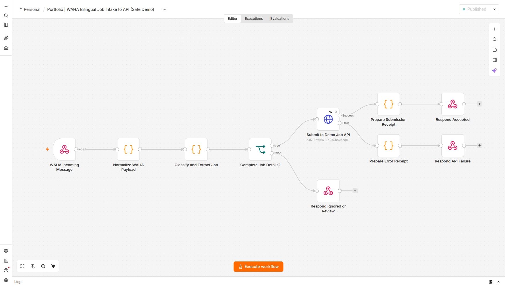
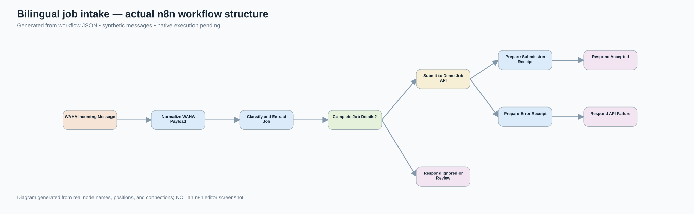

Independent project / n8n / JavaScript / Python
WhatsApp job posts,
structured and routed.
An editable n8n workflow for interpreting English and Arabic job announcements, rejecting unrelated messages, and delivering validated records to a REST API.
Ten real n8n nodes. Five functional stages.
01WebhookAccepts WAHA-style message events
02NormalizeGroup, sender and deduplication ID
03ExtractBilingual roles, cities, dates and pay
04ValidateReject non-jobs; review missing fields
05DeliverHTTP API with retry and response branches


Try the actual extraction code.
These examples run the JavaScript from the real n8n Code nodes in workflow_n8n.json. They do not send a WhatsApp message or submit a job to a server.
Incoming group message
Paste an English or Arabic example. The preview uses a synthetic group and ID.
Structured JSON result
Generated from the embedded source, not a hardcoded output screenshot.
Loading workflow source...
Checking local source...
This is an interactive static-page preview, not an API submission from your browser. Separately, the official n8n engine passed 7/7 native webhook-to-local-API tests with simulated WhatsApp messages, including retries and SQLite deduplication.
Inspect the work, run the tests.
10Connected n8n node definitions in the workflow JSON
50 / 50Synthetic offline Code-node test cases passed
4 / 4Local Python HTTP/SQLite API checks passed
4 / 4Hosted interactive code-preview checks passed
7 / 7Real n8n engine webhook-to-API tests passed
50-case test runner ↗
Live-page verification source ↗
Test evidence ↗
Local API source ↗
Runbook ↗
7/7 native test evidence ↗
Passing n8n execution logs ↗
The tests are self-directed and synthetic. No client testimonials, paid n8n integrations, LLM extraction or 24/7 hosting are claimed.